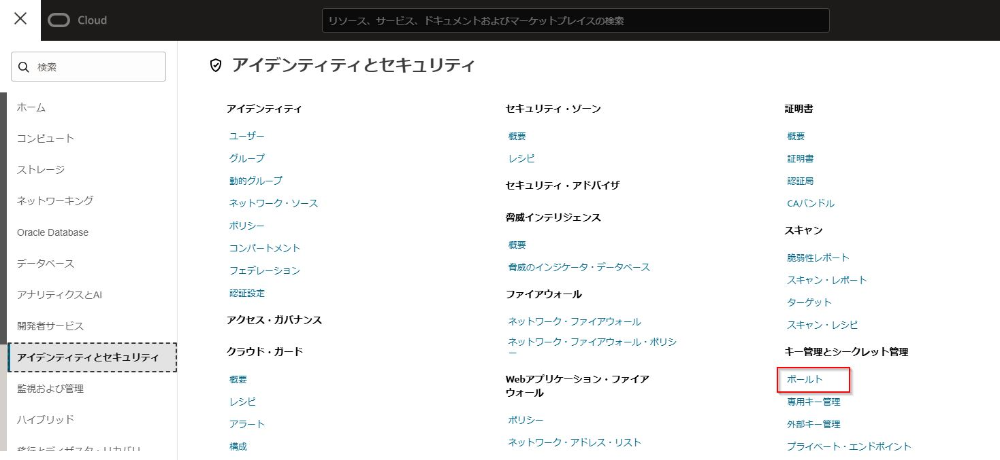
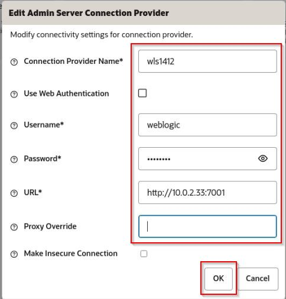
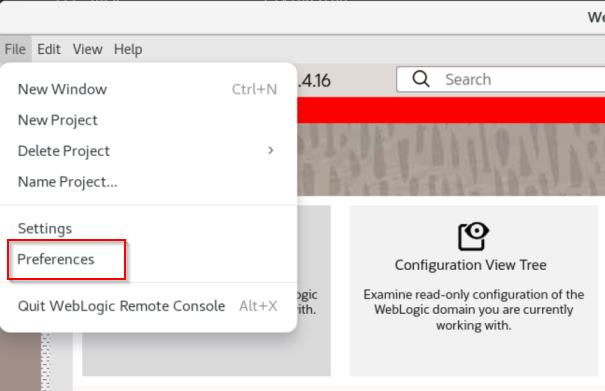

本ハンズオンでは、以下の構成を作成します。
マーケットプレイスから環境を作成すると、VCN（仮想クラウド・ネットワーク）やロードバランサーが自動的に構成され、プライベートネットワーク上にWebLogicがインストールされたインスタンスが作成されます。また、外部からのアクセス用に踏み台サーバー（Bastion）とパブリックサブネットも自動的に作成されます。
今回はプロビジョニングした後、踏み台サーバーにWebLogic Remote Consoleをインストールして、WebLogicの管理サーバーへアクセスする手順を学習します。

前提条件
- クラウド環境
- Oracle Cloudのアカウントを取得済みであること
ハンズオンの全体像
- WebLogic Server for OCI(UCM)環境を作成する
- 踏み台インスタンスにVNC Viewerでアクセスする
- 踏み台インスタンスにWebLogic Remote Consoleをインストールする
- WebLogic Remote Consoleで管理サーバーへアクセスする
事前準備
1. SSHキーペアを用意する
任意のSSHキーペアをご用意ください。
新たに作成する場合は、左上のハンバーガーメニューを展開して、「コンピュート」から「インスタンス」を選択し、「インスタンスの作成」をクリックします。
作成画面より、SSHキーの「秘密キー」と「公開キー」の両方をダウンロードし、利用します。
2. OCI VaultでSecretを作成する
WebLogic Server for OCIでは、WebLogic作成時の管理用パスワードはOCI Vaultにて管理します。
左上のハンバーガーメニューを展開して、「アイデンティティとセキュリティ」から「ボールト」を選択します。 
「ボールトの作成」をクリックします。

名前に「handson vault」と入力し、「ボールトの作成」をクリックします。

ボールトの作成には数分かかる場合があります。適宜ブラウザの更新を行ってください。
作成したボールト名をクリックし、「キーの作成」をクリックします。

名前に「handson key」と入力し、「キーの作成」をクリックします。

「シークレット」をクリックし、「シークレットの作成」をクリックします。

名前に「wlsadmin」と入力し、暗号化キーは「handson key」を選択し、シークレットコンテンツは「welcome1」と入力し、「シークレットの作成」をクリックします。
3. OCI IAMで権限の設定を行う(Optional)
WebLogic Server for OCI の利用には以下の2種類のポリシー設定が必要です。
あらかじめこれらの権限設定を実施した上で、WebLogic Server for OCIによるプロビジョニングを行います。
- WebLogic Server for OCI環境の管理者が所属するグループに対するポリシー
- WebLogic Server for OCI のWebコンソールの利用や作成後のリソース/環境の管理に必要な権限
- WebLogic Server for OCI が利用する動的グループに対するポリシー
- WebLogic Server for OCIがプロビジョニングを行う際に必要な権限
この手順では、ルート・コンパートメントにプロビジョニングを行うため、自動でこれらの権限が設定されます。
- WebLogic Server for OCIがプロビジョニングを行う際に必要な権限
環境の作成
WebLogic Server環境を作成します。
1. マーケットプレイスにてスタックを起動する
左上のハンバーガーメニューを展開して、「マーケットプレイス」から「すべてのアプリケーション」を選択します。
検索欄に「Oracle WebLogic Server Enterprise Edition UCM」と入力し、先頭に出てくるパネルをクリックします。

バージョンは14.1.2.0を選択します。

14.1.2.0.*** の *** の部分はキャプチャと異なる場合があります。
チェックボックスにチェックを入れ、「スタックの起動」をクリックします。
2. WebLogic Server for OCIをプロビジョニングする
最初の スタック情報 の画面はそのまま「Next」をクリックします。
次に 変数の構成 の画面では以下のように入力・選択します。
Note: 特に記載のない部分に関してはデフォルトの値で構いません
-
Stack Configuration
項目 値 Resource Name Prefix wls1412 SSH Public Key 1. SSHキーペアを用意するで作成したSSH Keyを選択。 OCI Policies ご利用の環境によって選択してください。 Create a Virtual Cloud Network チェックする Provision Load Balancer チェックする Enable Secured Production Mode チェックを外す -
Virtual Cloud Networking
項目 値 Virtual Cloud Network Name vcn -
WebLogic Domain Configuration
項目 値 Validated Secret for WebLogic Server Admin Password 2. OCI VaultでSecretを作成するで作成したSecretを選択 Java Development Kit version jdk21 -
WebLogic Server Compute Instance
項目 値 Node Count 2
入力、選択すると以下のようになります。 確認出来たら「Next」をクリックします。

確認 の画面で「作成」をクリックします。

Note: 作成完了までは10分ほどかかります。
成功 になったら、踏み台インスタンスのパブリックIPと管理サーバーが入っているインスタンスのプライベートIPを確認しておきます。左下にある「出力」から bastion_instance_public_ip(※1ページ目), weblogic_server_administration_console(※2ページ目), weblogic_instances(※2ページ目) のipアドレス部分をそれぞれどこかにコピーして保存しておきます。こちらは後の手順で使用します。

3. WebLogic Remote Console のインストール
WebLogic Remote ConsoleはインストールベースのGUIアプリケーションであるため、踏み台インスタンスにVNC Viwerからアクセスして操作を行います。
3.1 踏み台インスタンスにVNC環境を構築する
最初に踏み台インスタンスにVNC環境を構築します。
sshでアクセスして以下のコマンドを順番に実行します。
踏み台インスタンスのパブリックipは直前の手順で確認した bastion_instance_public_ip の値です。
$ sudo yum update -y --nobest
$ sudo yum groupinstall "Server with GUI" -y
$ sudo yum install tigervnc-server -y
次にVNC環境のパスワードを設定します。vncpasswd のコマンドを実行し、任意のパスワードを設定します。ここではhandson。
view-only passwordの質問は n を入力します。
$ vncpasswd
Password:
=> handson
Verify:
=> handson
Would you like to enter a view-only password (y/n)?
=> n
以下のコマンドを実行して、/etc/tigervnc/vncserver.users に :1=opc を追加します。
$ echo ":1=opc" | sudo tee -a /etc/tigervnc/vncserver.users > /dev/null
/etc/tigervnc/vncserver.users が以下のようになっていることを確認します。
# TigerVNC User assignment
#
# This file assigns users to specific VNC display numbers.
# The syntax is <display>=<username>. E.g.:
#
# :2=andrew
# :3=lisa
:1=opc
以下のコマンドを実行し、vncserverを起動、サービスに登録します。
$ sudo systemctl daemon-reload
$ sudo systemctl start vncserver@:1.service
$ sudo systemctl enable vncserver@:1.service
以下のコマンドを実行し、firewallの5901ポートを解放します。
$ sudo firewall-cmd --add-port=5901/tcp --permanent --zone=public
$ sudo firewall-cmd --reload
3.2 VCNのセキュリティグループのポートを開放する
VNCにアクセスするためにはVCNのネットワーク・セキュリティ・グループ(またはセキュリティリスト)も5901ポートを解放する必要があります。
OCIにログインし、「ネットワーキング」ー「仮想クラウド・ネットワーク」から2. WebLogic Server for OCIをプロビジョニングするで作成されたVCN(本手順の場合はwls1412-vcn)を開いて、左下のメニューから「ネットワーク・セキュリティ・グループ」をクリックして、踏み台のセキュリティ・グループである wls1412-bastion-nsg をクリックして開きます。

「ルールの追加」をクリックして、5901ポートをイングレスに追加します。
追加したら、以下のように表示されます。
次に同様の手順で、管理サーバーのネットワーク・セキュリティ・グループ(wls1412-admin-server-nsg)の7001ポートをイングレスに追加します。

追加すると以下のように表示されます。

以上で設定は完了しました。VNC Viewer等を使って踏み台環境へアクセスします。 画面サイズや色などはお好みで調整ください。
3.3 踏み台インスタンスにWebLogic Remote Consoleをインストールする
次にWebLogic Remote Consoleをダウンロード・インストールします。 VNC Viewer等でアクセスした環境のターミナルで以下のコマンドを実行します。
$ wget https://github.com/oracle/weblogic-remote-console/releases/download/v2.4.16/weblogic-remote-console-2.4.16-linux.rpm
$ sudo yum install -y libXScrnSaver
$ sudo rpm -ivh weblogic-remote-console-2.4.16-linux.rpm
4. WebLogic Remote Console からWebLogic 管理サーバへアクセスする
インストールが完了したら、WebLogic Remote Consoleを開きます。
パスワードが求められるので任意の値を入力します。
Startup Taskでは Add Admin Server Connection Provider を選択して「Choose」をクリックします。

Admin Server Connection Provider の画面では以下のように入力し、「OK」をクリックします。
{private ip}はプロビジョニングした後のジョブで出力されたweblogic_server_administration_consoleのIPアドレス部分の値です。
| 項目 | 値 |
|---|---|
| Connection Provider Name | wls1412 |
| User Name | weblogic |
| Password | welcome1 |
| URL | http://{private ip}:7001 |

アクセスが成功すると以下の画面が表示されます。

デフォルトでは言語が英語に設定されているので、日本語に変更します。
左上のFileから「Preferences」をクリックします。

Language/LocaleからJapaneseを選択して、Remote Consoleを一旦閉じて開きなおします。

Remote Consoleが日本語化されます。

5. WebLogic Remote Console について
Oracle WebLogic Remote Consoleは、Oracle WebLogic Serverドメインを管理するグラフィカル・ユーザー・インタフェースです。
WebLogic Remote Consoleは、REST APIを使用して柔軟性を提供し、様々な環境のドメインに接続できるようにします: クラウド内の物理または仮想マシン、コンテナまたはKubernetesポッド内。 また、WebLogic Remote Consoleを使用して、WebLogic Deploy Tooling (WDT)メタデータ・モデルを管理できます - つまり、ドメイン・テンプレートを作成し、同じ環境内で管理できます。
WebLogic Remote Consoleは、WebLogic Server 12.2.1.4.0以降と互換性があり、関連するWebLogic Serverリリースで使用可能な機能と一致するようにユーザー・インタフェースを調整します。
WebLogic Remote Consoleを使用して、次の操作を行うことができます:
- WebLogic Serverのインスタンスとクラスタの管理
- WDTメタデータ・モデルの作成および変更
- アプリケーションのデプロイ、管理およびモニター
- ユーザー、グループ、ロールの管理などのセキュリティ・パラメータの構成
- データベース接続性(JDBC),およびメッセージング(JMS)などのWebLogic Serverサービスの構成
詳細はこちらのドキュメントを参照してください。
WebLogic Remote Console 4つのパースペクティブについて
リモート・コンソールでは異なる領域に特化した4つのパースペクティブに分かれてドメインを管理します。

| パースペクティブ | アイコン | 説明 |
|---|---|---|
| ツリーの編集 | WebLogic Server ドメインの編集可能なビュー。 変更を加えてドメインにコミットする場合は、このパースペクティブを使用します。 |
|
| 構成ビュー・ツリー | WebLogic Server ドメインの読み取り専用ビュー。 変更を加えずにドメインの現在の設定を確認する場合は、このパースペクティブを使用します。 |
|
| モニタリング・ツリー |  |
実行中のドメインのランタイム統計の概要。 サーバーごとの統計、またはドメイン内のすべてのサーバーを集計した統計を表示できます。 たとえば、Server1 で実行されているアプリケーションと、1 つ以上のサーバーで実行されているアプリケーションを比較します。 モニタリング・ツリーでは、サーバーやアプリケーションの起動や停止などの制御操作も提供されます。 |
| セキュリティ・データ・ツリー | セキュリティ領域内のセキュリティ・プロバイダーのデータの編集可能なビュー。 これには、ユーザー、グループ、ポリシーなどが含まれます。 |
ツリーの編集と構成ビュー・ツリー
ツリーの編集と構成ビュー・ツリーのパースペクティブは似ていますが、2つの別々のConfiguration MBean から生成されるため、2つのパースペクティブの間には明確な違いが生じます。
- 「ツリーの編集」で行われた変更は、コミットするまで、または非動的変更の場合はサーバーを再起動するまで、構成ビュー・ツリーには表示されません。
- 動的に計算されたドメインコンテンツの一部は「ツリーの編集」に表示されません。たとえば、以下の項目が該当します。
- 動的クラスター（およびそのサーバー）
- 状況に応じた構成
- システムプロパティを使用してコマンドラインから行った変更
- プロダクションモード関連の設定の一部変更
編集可能なConfiguration MBeanと読み取り専用のConfiguration MBeanの違いの詳細については、以下を参照してください。
WebLogic Remote Console ドメイン編集手順の変更
WebLogic Server 14.1.1以前の管理コンソールではドメインに対して追加の構成や変更を行う場合に、「チェンジ・センター」で、「ロックして編集」ボタンを推してロックを獲得し、「変更のアクティブ化」ボタンを選択して変更を確定させるという手順でしたが、リモート・コンソールでは「ツリーの編集」で追加の構成や変更を行うとカート🛒に変更が追加され、カートから「変更のコミット」をすることで変更を確定させるという手順に変わりました。
- WebLogic 14.1.1 以前の管理コンソールでのドメイン更新の流れ
- 「ロックして編集」ボタンでロックを獲得
- ドメインの追加の構成や変更
- 「変更のアクティブ化」ボタンで変更を確定
- WebLogic 14.1.2 以降のリモート・コンソールでのドメイン更新の流れ
- 「ツリーの編集」からドメインの追加の構成や変更(更新内容はカートに追加される)
- カートの「変更のコミット」ボタンで変更を確定